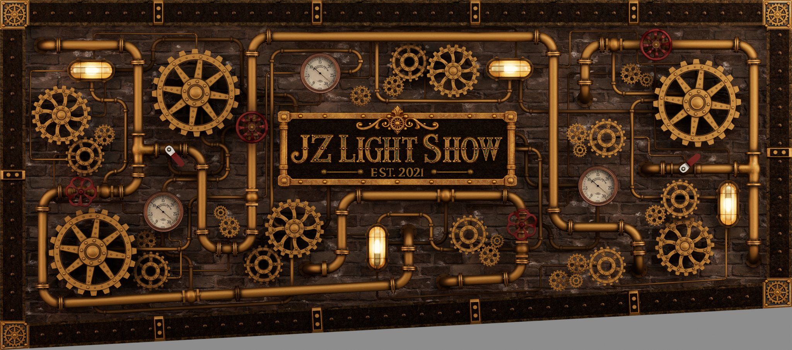

Driveway tracking sample
Print on A4 paper in landscape orientation at 100% / Actual size. Turn off Fit to page, Shrink to fit, and browser headers and footers.
Measure the artwork itself after printing: 180 mm wide × 79.6091205 mm high. If it differs, correct the print scale before testing alignment.

This is the full artwork, including the approved slope and gray lower region. Aim at the central sign and surrounding machinery to scan.
Tracking calibration is provisional. Phone acquisition, physical alignment, and target axes have not been measured for this Driveway sample.